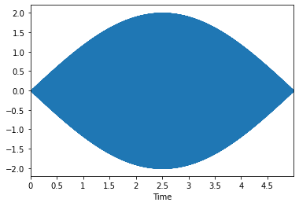
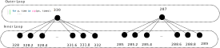

Assignment 1: Risset Beats (35 Points)
Chris Tralie
Due Friday 2/3/2023
Click here to listen to musical statements!
Overview / Logistics
The purpose of this assignment is to apply your knowledge of sinusoids in numpy to create a musical note sequence synthesizer with a very unique timbre based on something called a Risset beat, as invented by the French composer Jean-Claude Risset. A Risset beat is a series of beat frequencies that all line up at the same time to make a pitch that stands out. The background below describes the math in more detail. By the end of this assignment, you will be able to write down a function that's just a sum of sines and cosines which plays an entire tune, which repeats itself infinitely! (Though we will only sample one repetition of it)
Click here to download the starter code for this assignment, which also includes some tunes in .txt files that you can use to test your code. You will be editing the file risset.py and running methods from this file in jupyter so you can listen to audio.
Learning Objectives
- Practice numpy arrays, methods, and for loops in the service of musical applications
- Learn the mathematical and programmatic aspects of timing and interference patterns
- Use trig identities to speed up code
What To Submit
When you are finished, please submit your python file risset.py to canvas, as well as an audio file for your musical statement and the txt file with the notes that make it up. Please also submit answers to the following questions on Canvas
- A title for your musical statement
- If you want to submit your musical statement to the music contest, and if so, what name or pseudonym you would like to use in the musical gallery on our class web site
Background
As we saw in our class exercise, it is possible to control where the peaks of beat frequencies occur by shifting their component cosines in time. We can also make sure a beat occurs only once over an interval of time by choosing the right beat frequency. For example, let's say that we have 5 seconds of audio (called tune_length in the code), and we want to make a beat with a 330hz frequency that occurs at halfway through at 2.5 seconds. For it to occur only once, we'll want the period T of the beat to be 5 seconds, which means the beat frequency f should be 0.2hz (recall that f = 1/T). So choosing 329.8hz or 330.2 hz would be an appropriate choice. A function that makes this happens is this
\[ y(t) = \cos(2 \pi * 330 (t - 2.5)) + \cos(2 \pi * 330.2 (t - 2.5)) \]
Below is the audio we get from this
|  |
One thing that's a little unfortunate about this from a music making perspective is that the onset is very gradual. It would be even worse if we were making a much longer tune. To make the note stand out more over a shorter period of time, we can create more beats nearby. For example, if we put together 329.6hz, 329.8hz, 330hz, 330.2hz, and 330.4 hz, we get the following:
\[ y(t) = \sum_{f = 329.6, 329.8, 330, 330.2, 330.4} \cos(2 \pi f (t - 2.5)) \]
 |
This definitely seems to stand out more against the background, but why does this happen? To see this, we note that there are now beats all over the place! In fact, we will have N*(N-1)/2 beats for N frequencies. In this example, we have 4 beats at 0.2hz, but also 3 beats at double that frequency, 2 beats at triple that frequency, and one beat at quadruple that frequency, for a total of 10 beats:
| Beats at 0.2hz (Period 5) | 329.6, 329.8 | 329.8, 340 | 340, 340.2 | 340.2, 340.4 |
| Beats at 0.4hz (Period 5/2) | 329.6, 340 | 329.8, 340.2 | 340, 340.4 | |
| Beats at 0.6hz (Period 5/3) | 329.6, 340.2 | 329.8, 330.4 | ||
| Beats at 0.8hz (Period 5/4) | 329.6, 340.4 |
These higher frequency "harmonic beats" will reach peaks in more places than the base beat, but they do all reach peaks at the chosen time offset, where they work constructively together to make a much stronger onsets. In other places, they make these "side lobes." But we can cut down on these if we use more frequencies. For example, if we take 21 frequencies in intervals of 0.2 between 328hz and 332 hz, we get the following
\[ y(t) = \sum_{f = 328, 328.2, ..., 331.8, 332} \cos(2 \pi f (t - 2.5)) \]
 |
Now we're getting somewhere! This note is highly localized to 2.5 seconds in time now. If we took this a step further, we could also put two notes together in this fashion. Let's say, for example, that we wanted to put a note that's 287hz (a D) right before this note at t = 1. We could then simply add these two together
\[ y(t) = \sum_{f = 328, 328.2, ..., 331.8, 332} \cos(2 \pi f (t - 2.5)) + \sum_{f = 285, 285.2, ..., 288.8, 289} \cos(2 \pi f (t - 1)) \]
 |
As you can imagine, it's possible to make an entire composition this way, and the code to do so will be particularly short with the help of loops. So that's what we'll be doing in this assignment!
Programming Tasks
Your task in this assignment will be to create a program that takes a list of notes and their onset times, and to create a Risset beat for that note at each time. The note should only occur once at its specified time, so you will have to carefully tune the beat frequency to ensure this based on the specified length of the tune. You will also have to change its phase to control when its onset occurs.
Some example tunes have been provided for you as .txt files. Each line in the text file contains a note number, followed by a space, followed by the duration of the note in sixteenth note intervals (e.g. a quarter note concert A would be 0 4). For example, the file Tunes/birthday.txt contains the following
There is a helper method load_tune in risset.py to load these text files and convert the onset times into times in seconds. load_tune takes two parameters: a path to the filename holding the tune, and the length of the tune in seconds. The method returns two parallel arrays, ps and times, which contain the note numbers and onset times in seconds of each note, respectively. To loop through each pair of note and onset time together, you can use zip
I have already setup calls to this method in do_risset_slow and do_risset_fast. Here's an example of how you might call this code from a Jupyter notebook, assuming that the jupyter notebook is in the same directory as the starter code
Thanks to the wonders of python and numpy, you will not have to write much code to accomplish these tasks, but you will have to think carefully about the code that you do write. A good place to start would be to see if you can replicate the examples of single notes in the background, and then figure out how to extend that in a loop. Use your ears to help you as you're debugging. I have tried to provide as many examples as I can so you can check as you're incrementally developing.
Rests
If the note number is a nan (not a number), then this means a "rest," or a silence (all 0s) for the requested duration. The file Tunes/usher.txt has an example of rests, and the piano roll editor also supports them.
Part 1: A Naive Implementation (15 Points)
Fill in the method do_risset_slow to implement Risset beats from the definition above. You should use two nested loops: the outer loop should loop through the notes in a tune, and the inner loop should add an appropriate amount of frequencies spaced evenly around the corresponding note's frequency and at the right phase offset so that they occur at the right time.
Below is a video explaining the math below, for those who prefer that modality:
To make this concrete, let's recall the example from above
\[ y(t) = \sum_{f = 328, 328.2, ..., 331.8, 332} \cos(2 \pi f (t - 2.5)) + \sum_{f = 285, 285.2, ..., 288.8, 289} \cos(2 \pi f (t - 1)) \]
This can can be written as a two nested loops. The loop on the outside goes through the center frequencies of 330 and 287. But for each of these, we also need to add a bunch of other frequencies together. So the inner loop can do that for both 330 and 287.
Below are a few examples with more than two notes showing you what you should hear if this is working properly
2.5 Second Arpeggio, 25 freqs per note |
10 Second Arpeggio, 25 freqs per note |
10 Second Arpeggio, 100 freqs per noteNotice how this one has stronger onsets than the other one with more frequencies |
Birthday 10 Seconds, 100 Freqs |
Part 2: A Faster Implementation with Phase Aggregation Tricks (15 Points)
The above code certainly works, but it doesn't scale particularly well. Let's say we stretched the audio out over 70 seconds and we used 500 frequencies per note to keep the onsets strong. On my machine, this takes about 4 seconds per note. But for any reasonable tune, this can be unbearably slow. There's an example with an excerpt from Michael Jackson's Wanna Be Startin Something that has almost 200 notes in it, so it would take almost 15 minutes to generate a mere 70 second clip! This would make it difficult to debug and tweak.
Luckily, there is a mathematical trick to play so that we only need a sine and a cosine for each unique note that's played, regardless of how many times it's played. For this, we must turn to a trig identity:
\[ \cos(A+B) = \cos(A)\cos(B) - \sin(A)\sin(B) \]
What this means is that if we have a sinusoid\[ y(t) = \cos(2 \pi f t - \phi) \]
then, using the fact that cosine is an even function and sine is an odd function, we can write it equivalently as\[ y(t) = \cos(\phi) \cos(2 \pi f t) + \sin(\phi) \sin(2 \pi f t) \]
Let's now imagine that we had a bunch of the same sinusoid at different phases added together\[ y(t) = \sum_{i = 1}^N \cos(2 \pi f t + \phi_i) \]
In the naive scheme, we would need to add together N cosines. But with the above trick, we can reduce it to just a single sine and cosine as follows:\[ y(t) = \left( \sum_{i = 1}^N \cos(\phi_i) \right) \cos(2 \pi f t) + \left( \sum_{i = 1}^N \sin(\phi_i) \right) \sin(2 \pi f t)\]
In other words, sum up the cosine of all of the phases and use that as the amplitude of a pure cosine wave at the chosen frequency, and sum up the sines of all of the phases and use them as the amplitude of a pure sine wave. Click here for some notes of an example
Implement the above ideas to speed things up in the method do_risset_fast. Don't forget that you still need to add in all of the frequencies for each note to make a beat! It's just that each one of these frequencies will be repeated each time you repeat the note, so you'll save by only having to have a sine and a cosine for each one.
You should test this technique on happy birthday first to make sure you get the same sound (since this has repeated notes). But this also unlocks the Michael Jackson example, where you'll hear something like this
Michael Jackson's "Wanna Be Startin Somethin," 70 Seconds, 500 Freqs Per Note |
Python Dictionaries
One way (not the only way) to tackle this in code is by using a dictionary in python, which is like an array where the indices, or "keys," are arbitrary types, not numbers in a list index sequence. For example, here's a map where the keys are frequencies and the values hold the amplitudes of the frequencies
Part 3: Musical Statement (5 Points)
You just made a basic digital synthesizer, now put it to use! Make your own tune and synthesize it with one of your methods. This can be whatever you want, but it should have at least 5 notes in it (and hopefully many more!). If you're struggling with ideas, you can try some of the chords listed at this link.
You are required to submit something as part of your assignment, but you may also optionally choose to submit your entry to a "music contest" that we'll hold as a class. The winner of the music contest will receive 2 points of extra credit on the assignment.
To download and submit your audio, right click on the audio widget in Jupyter and click "Save Audio As"
For the bored...
Here are a few things you can try if you want to take this further, and which may enhance your musical statement (though you are certainly not limited to these!)
- We've been using the same number of sinusoids for each note, but you can change the attack by using more or fewer sinusoids per note. Add this feature and augment the text files with the tunes by specifying how many frequencies you want per note, in addition to the note number and its onset time.
- The notes occur in sequence right now, but you may also want to add chords where more than one note can play at once.
- What happens if you use some other periodic function, like a square or sawtooth wave, instead of a sinusoid?